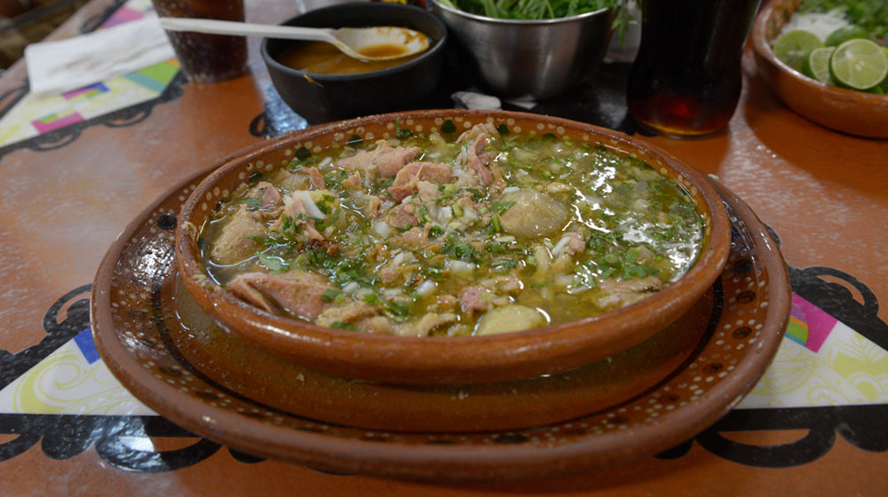

Skia's Recipes
Carne en su Jugo "Meat in its juices"
trust me its great

The GOD dish, taste of ambrosia
Ingredients
- 6 slices of Bacon
- 4 fresh tomatillos, husks removed
- 3 serrano peppers, seeded and chopped
- 1 clove garlic, peeled
- 3 cups water
- 2 pounds flank steak, cut into 1/2-inch squares
- 1 cube chicken bouillon
- ½ onion, chopped
- 6 tablespoons chopped fresh cilantro
- ground black pepper, to taste
- 1 lime, cut into 6 wedges
Steps
-
Cook the bacon in a large, deep skillet over medium-high heat until crispy, about 10
minutes. Drain on a paper towel-lined plate. Crumble the bacon and set aside.
-
Combine the tomatillos, serrano peppers, garlic, and water in a small saucepan over
medium-high heat; bring to a boil, cover, and simmer for 10 minutes. Remove the pan
from the heat and allow to cool. Transfer the contents to a blender and blend until
smooth. Set aside. You can skip the simmering step and blend all the ingredients raw
with a few pieces of browned flank steak if you like.
-
Place a non-stick skillet over medium-high heat; cook the flank steak in the hot skillet
until completely browned. Pour the tomatillo mixture over the beef and bring to a
boil. Stir the chicken bouillon into the mixture, and reduce heat to medium. Cover the
skillet and simmer until tender, at least 30 minutes and up to 1 hour.
-
Meanwhile, heat the pinto beans in a saucepan over medium heat until warm; reduce
heat to low to keep warm until needed. Stir the bacon and pinto beans into the flank
steak mixture; divide the mixture between 6 bowls. Garnish each with onion, cilantro,
black pepper, and a lime wedge.